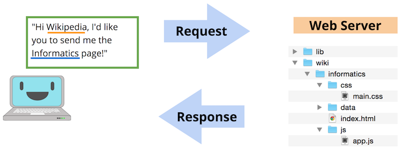
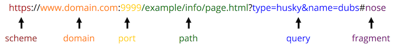

Chapter 2 Sviluppo lato client
Questo capitolo offre una panoramica del contesto per lo sviluppo web lato client: una breve introduzione a come funziona Internet e a dove si colloca la programmazione client-side. Fornisce un background utile per apprendere le tecnologie web specifiche.
2.1 Client e server
Lo web development e’ il processo di implementazione (programmazione) di siti web e applicazioni che gli utenti possono accedere tramite Internet. Tuttavia Internet e’ una rete che coinvolge molti computer che comunicano tra loro. Questi computer possono essere divisi in due gruppi: i server memorizzano (“host”) i contenuti e li forniscono (“serve”) ad altri computer, mentre i client richiedono quei contenuti ai server e poi li presentano agli utenti umani. In generale, i server sono computer posseduti e gestiti da grandi organizzazioni, mentre i client sono dispositivi individuali (laptop, telefoni, ecc.) di proprieta’ di singoli utenti.
Come interagiscono client e server? Consideriamo il processo di visualizzazione di una web page di base, come la voce Wikipedia su Informatics. Per visitare questa pagina, l’utente digita l’indirizzo web (https://en.wikipedia.org/wiki/Informatics) nella barra degli indirizzi, oppure clicca un link per arrivarci. In entrambi i casi, il computer dell’utente e’ il client, e il browser prende quell’indirizzo o link e lo usa per creare una HTTP Request — una richiesta di dati inviata seguendo l’HyperText Transfer Protocol. Questa richiesta e’ come una lettera che chiede informazioni, ed e’ inviata a un altro computer: il web server che contiene quelle informazioni.

Il web server riceve la richiesta e, in base al contenuto della richiesta (inclusi i dettagli dell’indirizzo web), decide quali informazioni inviare come response al client. In generale, questa response e’ composta da molti file diversi: il contenuto testuale della pagina, informazioni di styling (font, colore) su come deve apparire, istruzioni per rispondere alle interazioni dell’utente (click di bottoni), immagini o altri asset da mostrare, e cosi’ via.
Il browser del client prende tutti questi file nella response e li usa per renderizzare (creare/presentare) la web page per l’utente: determina quale testo mostrare, quale font e colore usare per quel testo, dove posizionare le immagini ed e’ pronto a fare altro quando l’utente clicca su una di quelle immagini. In effetti, nella sua forma piu’ basilare un web browser e’ un programma che fa due cose: (1) invia HTTP request per conto dell’utente, e (2) renderizza la response risultante dal server.
Data questa interazione, lo sviluppo web lato client consiste nell’implementare programmi (scrivere codice) che vengono interpretati dal browser ed eseguiti dal client. E’ il processo di scrittura del codice che viene inviato nella response del server. Questo codice specifica come i siti web devono apparire e come l’utente deve interagire con essi. Al contrario, lo sviluppo web lato server consiste nell’implementare programmi che il server usa per determinare quale codice client-side viene consegnato. Per esempio, un programma server-side contiene la logica per decidere quale foto di un gatto inviare con la richiesta, mentre un programma client-side contiene la logica su dove e come quella foto deve apparire nella pagina.
Questo corso si concentra sullo sviluppo web lato client, ovvero lo sviluppo di programmi eseguiti dal browser (generalmente come risposta a una richiesta a un web server). Anche se trattera’ come i programmi client-side possono interagire con un server, molti dei concetti discussi qui possono essere eseguiti anche dentro un browser senza affidarsi a un server esterno (si dice “running locally”, perche’ il codice gira sulla macchina “locale” senza andare su un server).
2.2 URL e file web
Che l’utente digiti un indirizzo nella barra o clicchi un link (che semplicemente naviga verso un altro indirizzo), il server determina quale contenuto inviare al browser per renderizzarlo in base all’URL nella barra degli indirizzi. L’URL (Uniform Resource Locator) e’ simile all’indirizzo su una lettera postale inviata all’interno di una grande organizzazione come un’universita’: indichi l’indirizzo aziendale, il dipartimento e la persona, e otterrai una response (e dati) diversa da Alice in Accounting rispetto a Sally in Sales. L’URL funge da identificatore (pensa: nome di variabile) per la pagina che vuoi vedere, mentre la pagina o i dati a cui vuoi accedere sono la risorsa che viene identificata/localizzata. In realta’, piu’ propriamente gli URL sono una forma specializzata di URI (Uniform Resource Identifier), anche se i due termini sono spesso usati in modo intercambiabile.
Come gli indirizzi postali, gli URL hanno un formato specifico usato per indirizzare la richiesta alla risorsa corretta.

Un URL e’ in genere composto dalle seguenti parti (anche se non tutte devono essere incluse):
scheme(ancheprotocol): il “linguaggio” che il computer usera’ per inviare la richiesta della risorsa (file). Nel web, e’ spessohttp(HyperText Transfer Protocol). Ma e’ una best practice usare invecehttps(secure HTTP), che cripta la comunicazione. Non usarehttpnon sicuro!Esistono anche altri protocolli. Se fai doppio click su un file web dal tuo computer locale, il file si apre con il protocollo
file, cioe’ il computer sta accedendo alla risorsa dal file system.Gli hyperlink delle web page includono spesso URI con il protocollo
mailtoper link email, o il protocollotelper numeri di telefono.Lavorando con sistemi web, potresti incontrare indirizzi
ftp(File Transfer Protocol), usati quando si caricano file su alcuni webhost. Quando usigit, potresti incontrare indirizzissh(Secure Shell protocol). E ci sono molti altri protocolli di rete, ma sul web di solito useremo solohttps.domain(anchehost): l’indirizzo del web server da cui richiedere informazioni. Puoi pensarlo come il destinatario della lettera. Sono gli indirizzi.coma cui pensi di solito, comegoogle.comoischool.uw.edu.(Il
wwwspesso non e’ necessario; indica che l’indirizzo e’ un web address, e la maggior parte dei server tratta qualsiasi richiestahttpscome web address). E’ anche possibile scrivere il domain in un URL usando un IP address, ma non e’ comune nel web programming.L’host puo’ includere piu’ subdomain, che sono scritti prima di ogni
.. Quindiischool.uw.edusi riferisce al subdomainischooldel domainuw.edu.Il domain
localhost(IP127.0.0.1) e’ un nome speciale che si riferisce all’indirizzo del computer corrente; lo userai quando accedi a pagine su development server locali.port(opzionale): usata per determinare dove connettersi al web server. Per default, le web request usano la porta80, ma alcuni web server accettano connessioni su altre porte — ad es.8080,8000e3000sono comuni nei development server descritti sotto.path: quale risorsa su quel web server vuoi accedere. Per molti web server, puoi pensarla come il relative path al file a partire dalla cartella “root” di quel server (che potrebbe non essere la root del computer). Quindi nel diagramma sopra il path/example/info/page.htmlsi puo’ intendere come riferimento al filepage.htmlnella cartellainfonella cartellaexampledentro la root del server.Se specifichi un path a una cartella invece che a un file (incluso
/come cartella “root”), la maggior parte dei web server servira’ il file chiamatoindex.htmlda quella cartella (cioe’ il path “di default” e’index.html). Quindihttps://google.come’ in realta’ lo stesso dihttps://google.com/index.html. Per questo,index.htmle’ il nome tradizionale del file che contiene la home page di un sito.Anche se il path si puo’ capire come un percorso di file, non corrisponde necessariamente alla struttura dei file del server — infatti, piu’ avanti nel corso imparerai a specificare routes per il path che non riflettono affatto file!
Come in qualsiasi programma, dovresti sempre usare path relativi nel web programming, e questi path sono spesso (ma non sempre!) relativi alla root folder del web server.query(opzionale): parameters extra (argomenti) inclusi nella request su quale risorsa accedere. Il?iniziale fa parte della query, seguito da coppie chiave-valore di parameter separate da&. Sono comunemente usate quando includi cose come “search query” in un motore di ricerca.fragment(opzionale): indica quale parte (“fragment”) della risorsa accedere. E’ usato, per esempio, per far “saltare” l’utente a meta’ pagina. Il#iniziale fa parte del fragment.
Tipi di file client-side
E’ compito del browser interpretare e renderizzare i file di source code inviati da un server come parte di una HTTP response. Come programmatore client-side, il tuo compito e’ scrivere questo source code per essere interpretato dal browser. Esistono vari tipi di file di source code, tra cui:
.htmlfile che contengono codice scritto in HTML (HyperText Markup Language). Questo codice specifica il contenuto testuale e semantico della web page. Vedi il capitolo HTML Fundamentals per dettagli su HTML. Nota che aprire uno di questi file dal tuo file system (ad esempio con doppio click) aprira’ la web page che rappresenta in un browser..cssfile che contengono codice scritto in CSS (Cascading Style Sheets). Questo codice e’ usato per specificare proprieta’ di styling e aspetto visivo (ad es. colore e font) del contenuto HTML. Vedi il capitolo CSS Fundamentals per dettagli su CSS..jsfile che contengono codice scritto in JavaScript. Questo codice e’ usato per specificare comportamenti interattivi che il sito eseguira’ — per esempio, cosa deve cambiare quando l’utente clicca un bottone. Nota che il codice JavaScript sono “programmi” inviati dal web server come parte della response, ma che vengono eseguiti dal browser sul computer del client. Vedi il capitolo JavaScript Fundamentals per dettagli su JavaScript.
Le HTTP response possono includere anche file asset aggiuntivi, come immagini (.png, .jpg, .gif, ecc.), font, video o file musicali, ecc.
I moderni web browser sono in grado di renderizzare (interpretare e visualizzare) tutti questi tipi di file, combinandoli in pagine web moderne e interattive che usi ogni giorno. In effetti, puoi aprire quasi qualsiasi file dentro un browser, ad esempio facendo click destro sul file e selezionando “Open With”, oppure trascinando il file nel browser. I file HTML sono la base delle web page, quindi puoi aprire un file .html nel browser con doppio click (come apriresti un file .docx in MS Word):
2.3 Server e hosting
Anche se il corso si concentra sullo sviluppo client-side (scrivere codice che verra’ renderizzato da un browser), e’ impossibile fare web development senza interagire in qualche modo con un server. Come detto sopra, un server e’ un computer che “serve” (fornisce) le risorse, i file e i dati richiesti da un browser.
Questi file sono memorizzati sul server prima di essere serviti — questo si chiama hosting della risorsa (la risorsa “vive” sul server). Anche quando ti concentri sullo sviluppo client-side, i file che vuoi far renderizzare al browser devono essere ospitati (devono “vivere”) da qualche parte. Potresti fare sviluppo e test “locali”, in cui i file restano sul tuo computer invece che su una macchina remota su Internet. In questo caso, e’ possibile usare il file system del tuo computer come “host”, oppure usare un development web server (vedi sotto).
Ma quando vuoi rendere il tuo sito disponibile ad altri (“pubblicarlo”, cioe’ metterlo in production), avrai bisogno di un server dedicato in grado di ospitare quei file con un URL a cui gli altri possono accedere. Esiste una grande varieta’ di web hosting service su Internet. Alcuni sono gratuiti (spesso con storage o bandwidth limitati — quanti dati possono servire e quante request possono gestire), altri richiedono una tariffa mensile o annuale. Non c’e’ un prezzo standard: dovrai valutare quale servizio puo’ adattarsi alle tue esigenze e al tuo budget. Disponibilita’ e qualita’ dei web hosting service cambiano frequentemente; consigliare host esula da questo testo — ma vedi Hosting with GitHub Pages per un metodo semplice e gratuito (usato per questo libro).
Nota che, oltre a ospitare i file su un server specifico, rendere un sito disponibile richiede anche un URL a cui gli altri possano accedere. Molti hosting service forniscono un URL — ma se vuoi un nome specifico per la parte di domain dell’URL (ad es. un tuo “.com”), dovrai acquistare e registrare quel domain name. Come per il web hosting, ci sono servizi che facilitano l’acquisto e la registrazione di domain name. Quando registri un domain, puoi impostarlo in modo che punti alla posizione (IP) del tuo hosting server, cosi’ gli utenti che vanno a quell’URL saranno indirizzati al tuo server, che potra’ servire i file. Quindi se vuoi creare un tuo sito ci sono spesso due cose da acquistare: web hosting (spazio e banda) e un domain name. Acquistare un domain name non e’ necessario per ospitare un sito se sei disposto ad accettare i limiti dello schema di naming dell’host — per esempio, questo libro e’ ospitato su info340.github.io, che e’ gratuito come subdomain di github.io (GitHub Pages).
Hosting con GitHub Pages
Come modo facile e gratuito per rendere disponibili siti web, GitHub offre un web hosting gratuito tramite un servizio chiamato Github Pages. Poiche’ i repository GitHub gia’ memorizzano il codice online, e’ semplice rendere quel codice disponibile come risorsa ai browser (ospitarlo sul web). Puoi ospitare un sito per un account utente o organizzazione, oppure creare piu’ siti per progetti diversi (repo). I siti di progetto saranno disponibili su https://username.github.io/reponame — questo serve la root folder del repo (in particolare il file index.html che si trova li’).
E’ possibile configurare GitHub Pages per un repo specifico tramite le Settings del repo. Tuttavia, uno dei modi migliori per pubblicare un progetto web con GitHub Pages e’ usare il branching: in particolare, qualsiasi contenuto in un branch chiamato gh-pages verra’ automaticamente servito come pagina web hostata. Questa e’ una feature speciale fornita da GitHub per i branch con questo nome.
Usare un branch separato aiuta a distinguere tra il tuo development code (il branch main — quello su cui stai lavorando, e che puo’ contenere bug, errori o parti non finite) e il production code (il branch gh-pages — una versione “funzionante” che puoi condividere con altri). Tenendo questi branch separati, puoi fare development e apportare cambiamenti potenzialmente breaking senza rompere il sito per gli utenti che lo stanno accedendo. Anche se e’ possibile servire direttamente il branch main, e’ una best practice di software engineering tenere separate le versioni di development e production. Non fare mai modifiche in production!
Quindi per pubblicare un sito il cui codice e’ in un repository GitHub, crea un nuovo branch per il repo chiamato esattamente gh-pages (usando git checkout -b gh-pages). Questo e’ il tuo branch di produzione — qualsiasi codice su questo branch puo’ essere pushed su GitHub e reso disponibile agli utenti. Nota che dovrai fare push del branch su GitHub affinche’ venga servito (usando git push origin gh-pages mentre sei su quel branch).
IMPORTANTE: Non fare mai modifiche sul branch di produzione gh-pages! Devi sempre fare qualsiasi modifica al codice sul branch main, e poi fare merge di quelle modifiche nel branch gh-pages. Di fatto, non ricordo di essere mai rimasto sul branch gh-pages piu’ del tempo necessario per fare merge e push. Quindi il tuo workflow dovrebbe essere:
## do all your coding on `main`!
# switch to gh-pages to publish
git checkout gh-pages
# merge the changes from main
git merge main
# push to GitHub to publish
git push origin gh-pages
# IMMEDIATELY switch back to main branch for more coding
git checkout mainNota che se pubblichi in produzione (push su gh-pages) e trovi un bug o un problema nel tuo sito, devi comunque correggerlo sul branch main seguendo la procedura sopra. Si’, puo’ sembrare macchinoso e noioso, ma e’ per questo che devi testare accuratamente il tuo lavoro in development (sul branch main) prima di fare push in production. Questa e’ una pratica importante di software engineering!
Development server
Come detto sopra, e’ possibile richiedere un file .html (aprire una web page) usando il protocollo file semplicemente aprendo quel file nel browser. Questo va bene per testare molti programmi client-side. Tuttavia, ci sono alcune interazioni client-side che per ragioni di sicurezza funzionano solo se una web page viene richiesta da un web server (ad es. tramite protocollo http o https).
In queste situazioni, dovrai sviluppare web application client-side usando un local development web server. E’ un web server che esegui dal tuo computer — la tua macchina agisce come web server, e usi il browser per far inviare al tuo computer una request a se stesso per la web page. Pensa a mandarti una lettera. I development web server aiutano ad aggirare le restrizioni sulle richieste cross-origin, e offrono benefici aggiuntivi per accelerare lo sviluppo — come ricaricare automaticamente il browser quando cambia il source code.
Ci sono vari development server semplici che puoi usare:
live-servere’ un package Node che esegue un semplice web server da command line. Puoi eseguire il programma e “servire” i file dalla cartella corrente connpx live-server .(il.indica la cartella corrente). Questo aprira’ il tuo fileindex.htmlin un browser (se non succede, puoi visualizzare la pagina su http://localhost:8080 di default). Inoltre aggiornera’ automaticamente la pagina ogni volta che cambi un file nella cartella.L’applicazione Vite per creare app React fornisce un webserver in grado di transpile del codice React. Si usa nello sviluppo di app React (e solo in quel caso). Vedi Getting Set Up: React and Vite per dettagli.
Il modulo Python [
http.server] e’ in grado di eseguire un semplice web server. Devi avere Python 3 installato e disponibile sulla tua macchina. Puoi quindi usare il comandopython -m http.serverper servire il contenuto della cartella corrente, di default su http://localhost:8080.Esistono varie estensioni per VS Code che forniscono questa funzionalita’, incluse
LiveServerevscode-previw-server.
Quando esegui un web server locale, ricorda che l’indirizzo 127.0.0.1 e’ l’IP di localhost, che e’ il domain della tua macchina (il “local host”). La maggior parte dei development server, quando avviati, ti dira’ l’URL della root directory del server.
Piu’ comunemente, vorrai avviare il web server dalla root directory del tuo progetto, in modo che il relative path index.html trovi il file giusto.
Di solito puoi fermare un development server da command line con il comando universale ctrl + c. Altrimenti, ti conviene lasciare il server in esecuzione in un terminale in background per tutto il tempo in cui lavori al progetto.
2.4 Web standards
Nello sviluppo client-side, i file web (.html, .css e .js) che scrivi vengono consegnati ai client su richiesta e poi interpretati e renderizzati dal browser. In effetti, un web browser e’ qualsiasi software capace di renderizzare questi file (e inviare HTTP request per recuperarli). E ci sono moltissimi web browser diversi nel mondo. Il grafico seguente di StatCounter mostra la popolarita’ relativa dei vari browser:
Source: StatCounter Global Stats - Browser Market Share. See also caniuse.com’s usage table for information on mobile and older browsers.
Questi browser sono creati da sviluppatori diversi, che lavorano per organizzazioni diverse (spesso rivali). E anche se possono esserci “vincitori” chiari in termini di popolarita’, non puoi ignorare i browser meno popolari. Ad esempio, anche se solo lo 0,1% degli utenti usa un browser specifico (come Internet Explorer), sono comunque piu’ di 5 milioni di persone nel mondo. Quindi, per assicurarsi che tutti possano renderizzare le stesse risorse servite, tutti cercano di seguire un insieme di web standards.
I web standards sono specifiche concordate su come il source code di una web page deve essere renderizzato dal browser. I web standards definiscono sia la sintassi del linguaggio (ad es. come scrivere elementi HTML) sia la semantica (ad es. quali elementi HTML usare), in modo che sia comprensibile da qualunque browser che segua (accetti) quello standard. E siccome come developer vuoi che le pagine vengano renderizzate allo stesso modo su tutti i browser, i web standards indicano i requisiti per scrivere il codice affinche’ le pagine si renderizzino correttamente.
I web standards moderni sono creati e mantenuti da un grande gruppo di stakeholder noto come World Wide Web Consortium (W3C), che include sviluppatori di browser maggiori come Google, Apple e Mozilla. Tuttavia questo gruppo non ha poteri di enforcement: quindi i browser spesso deviano dagli standard pubblicati! Un browser puo’ ignorare uno standard per “aiutare” i developer (ad es. facendo una “best guess” per renderizzare HTML malformato), o per introdurre nuove feature (ad es. una nuova proprieta’ CSS che produce un effetto speciale). Alcuni browser sono migliori di altri nel conformarsi agli standard. Internet Explorer — in particolare IE 6 — e’ noto per non rispettare gli standard e richiedere sforzo extra ai developer per far renderizzare correttamente le pagine su quei browser. Questo e’ parte del motivo per cui IE ha una cattiva reputazione e riceve tanto sarcasmo dagli sviluppatori. (Questo problema non vale per Microsoft Edge).
Far accordare cosi’ tante persone su uno standard di comunicazione richiede tempo; quindi i web standards cambiano relativamente lentamente: lo standard HTML 4 e’ stato adottato nel 1997, ma lo standard HTML 5 (che questo corso insegna) non e’ stato finalizzato fino al 2014. Lo standard CSS 3 e’ diviso in piu’ di 50 module diversi sviluppati e introdotti indipendentemente, e quindi viene adottato in modo continuo e a pezzi.
Quando si introducono nuove proprieta’ CSS sperimentali, storicamente i browser hanno usato vendor prefix nei nomi delle proprieta’. Mentre si decidono gli standard, ogni browser puo’ trattare quella proprieta’ in modo leggermente diverso, costringendo i developer che vogliono usare il “latest and greatest” a fornire una definizione o un valore diverso per ogni vendor. I prefix sono una convenzione di naming che fa si’ che la proprieta’ sia compresa e applicata solo da un browser specifico; ad es. -webkit-hyphens usa la versione Webkit della proprieta’ hyphens (per controllare i word break), mentre -ms-hyphens usa la versione IE (Microsoft). Questa pratica e’ attualmente scoraggiata (con i browser che usano flag interni per gestire le feature sperimentali) ed e’ in fase di dismissione, anche se i prefix possono essere richiesti quando si supportano browser piu’ vecchi. Tool come Autoprefixer possono aiutare a gestire automaticamente i prefix.
Scrivere codice “corretto” nel web development significa scrivere codice conforme ai web standards. Quindi anche se il contenuto puo’ sembrare renderizzato correttamente nel tuo browser, se non segue lo standard potrebbe non funzionare sul computer di qualcun altro (o sul tuo dopo un aggiornamento software). Per questo il requisito di correttezza nel web development e’ non solo che il contenuto appaia corretto, ma che segua le specifiche sintattiche e semantiche dei web standards. In generale, finche’ il sito e’ conforme agli standard, si renderizzera’ correttamente su tutti i “modern browsers” (Chrome, Safari, Edge, Firefox, ecc.) — anche se potrebbero ancora esserci differenze tra browser o sistemi operativi.
Per verificare quali feature sono disponibili su un determinato browser, puoi usare un tool come caniuse.com. Questo sito permette di cercare feature web (ad es. “flexbox”) e mostra quali browser — e quali versioni di quei browser — supportano quella feature. I riquadri verdi indicano supporto, i gialli supporto parziale, e i marroni non supportato. E’ probabilmente la migliore fonte di informazioni sul supporto delle feature. https://compat-table.github.io/compat-table/es6/ ha una tabella simile per le ultime feature JavaScript, e la documentazione della Mozilla Developer Network (MDN) elenca anche la compatibilita’ dei browser alla fine di ogni pagina.
Sviluppa sempre pensando ai browser degli altri, non solo al tuo! Testa il codice rispetto agli standard, non solo rispetto al fatto che sembri ok in un singolo browser.
Un modo per verificare che il codice che stai scrivendo segua gli standard e’ validarlo usando un tool automatico. Il W3C fornisce tool online che aiutano a validare il codice:
- W3C HTML Validation Service
- W3C CSS Validation Service
- W3C Developer Tools per un elenco completo di validator
Per usare questi servizi, inserisci semplicemente l’URL pubblico della tua web page (oppure copia e incolla il contenuto dei tuoi file .html o .css), poi avvia la validazione. Dovrai sicuramente correggere eventuali error che ricevi. Le warning vanno considerate; tuttavia e’ possibile avere false positive. Leggi attentamente la warning e valuta se si tratta davvero di un “bug” nel tuo codice.
Questo testo non include dettagli specifici necessari a garantire che le web page funzionino su ogni singolo browser — piuttosto il focus e’ introdurre tecniche di web development conformi agli standard. Supportare browser piu’ vecchi che non rispettano gli standard (e garantire che tutti possano accedere al tuo sito) e’ lasciato come esercizio al lettore.
2.5 Accessibilita’ web
Tutta la trattazione su principi, motivazioni e tecniche operative e’ raccolta nel capitolo Accessibilita’ dei siti web. In questo capitolo ci concentriamo sui web standards e rimandiamo a quella sezione per i dettagli.